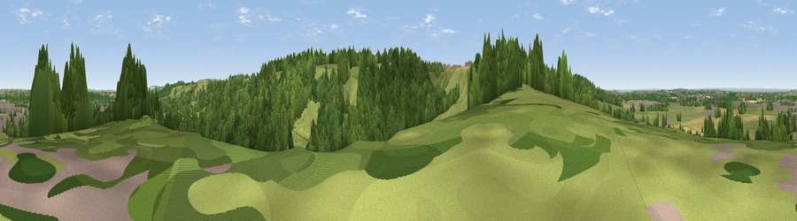

Viewpoint near Wroughton
#35460 in England · top 74% of its area beats it · near WroughtonWhere it is
The exact computed spot (SU 13825 80225). Click the marker for map links.
The view, rendered

A 360° render of this exact spot computed from the terrain model, tree cover and land cover — summer colours, afternoon light, calibrated against photographs of famous viewpoints. Real trees, hedges and buildings will differ in detail.
The panorama
Grey silhouette: terrain skyline in each direction (720 bearings, Earth curvature and refraction included). Dashed green: skyline with trees (+15 m) and buildings (+8 m) as obstacles. Blue strip: how far the ground is visible on each bearing.
Where the view opens
Wedge length = distance to the farthest visible ground on that bearing (vegetation-aware). Rings at 10, 25 and 50 km.
What fills the view
46% grassland · 39% woodland · 9% built-up · 7% cropland
Angular shares of the visible panorama (visual magnitude), not map area. Landscape diversity 0.49 (0–1 Shannon).
Key numbers
More beautiful places nearby
The staircase of upgrades: each row has a higher view potential than everything closer. Driving times are estimates from straight-line distance, calibrated against real road routing — check an actual route before setting out.
| Place | Direction | Drive | Score |
|---|---|---|---|
| Viewpoint near Wroughton | E · 2 km | ~6 min | 61.4 |
| Viewpoint near Broad Town | WSW · 3 km | ~8 min | 65.8 |
| Viewpoint near Broad Town | WSW · 4 km | ~10 min | 66.9 |
| Viewpoint near Liddington | E · 7 km | ~15 min | 73.4 |
| Viewpoint near Liddington | E · 8 km | ~16 min | 74.4 |
| Viewpoint near Allington | SSW · 17 km | ~29 min | 75.6 |
| Martinsell viewpoint | SSE · 17 km | ~30 min | 77.3 |
| Viewpoint near Nympsfield | WNW · 40 km | ~60 min | 77.5 |
51.52078, -1.80214 · source: screening · position refined by local search. Computed location — check access rights before visiting.